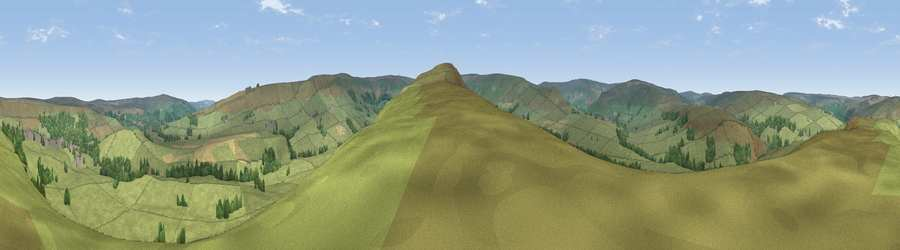

Viewpoint near Castleton
#27847 in England · top 63% of its area beats it · near Castleton · open accessWhere it is
The exact computed spot (NZ 68225 06825). Click the marker for map links.
Public access: this spot lies on mapped open-access land (CRoW Act 2000) — you may roam here on foot. Computed from Natural England's CRoW access layer and OpenStreetMap rights of way — not the legal definitive map. Always verify locally.
The view, rendered

A 360° render of this exact spot computed from the terrain model, tree cover and land cover — summer colours, afternoon light, calibrated against photographs of famous viewpoints. Real trees, hedges and buildings will differ in detail.
The panorama
Grey silhouette: terrain skyline in each direction (720 bearings, Earth curvature and refraction included). Dashed green: skyline with trees (+15 m) and buildings (+8 m) as obstacles. Blue strip: how far the ground is visible on each bearing.
Where the view opens
Wedge length = distance to the farthest visible ground on that bearing (vegetation-aware). Rings at 10, 25 and 50 km.
What fills the view
92% grassland · 6% woodland · 2% cropland ·
Angular shares of the visible panorama (visual magnitude), not map area. Landscape diversity 0.15 (0–1 Shannon).
Key numbers
More beautiful places nearby
The staircase of upgrades: each row has a higher view potential than everything closer. Driving times are estimates from straight-line distance, calibrated against real road routing — check an actual route before setting out.
| Place | Direction | Drive | Score |
|---|---|---|---|
| Viewpoint near Castleton | NNW · 1 km | ~2 min | 43.2 |
| Viewpoint near Botton | S · 2 km | ~4 min | 65.4 |
| Viewpoint near Botton | SE · 3 km | ~7 min | 69.7 |
| Viewpoint near Botton | SE · 3 km | ~8 min | 72.1 |
| Danby Beacon | ENE · 6 km | ~13 min | 73.4 |
| Viewpoint near Margrove Park | NNW · 8 km | ~16 min | 74.2 |
| Viewpoint near Ingleby Greenhow | WSW · 8 km | ~16 min | 76.0 |
| Viewpoint near Charltons | NNW · 9 km | ~18 min | 80.6 |
54.45225, -0.94927 · source: screening · position refined by local search. Computed location — check access rights before visiting.